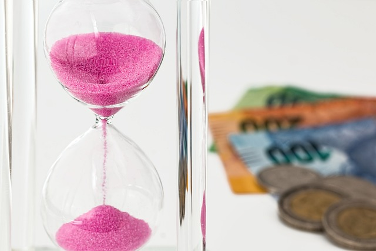

- Patience for training your dog.
- Time to spend with your dog for a closer relationship.
- Money to spend on your dog for food, treats, or medicine.
- Space for your dog to run around and play or to train.
- Love in your heart.
- Treats for your dog's training.

Steps for day to day love.
- Wake up early and first take your dog to go pee outside.
- Feed your dog when he/she comes back inside.
- After dog is fed play/train your dog for at minimum of 30 min (Give your dog treats if they did the trick right).
- After you played/trained with your dog pick up there poopies in the yard.
- Take dog inside so she can lay on the bed while you do your daily things or leave your dog outside to play.
- At around 12 am take your dog for a walk or play/train with your dog again.
- After training take your dog inside and have a nap with your dog if you have time, if not let your dog sleep with something that has your smell on it.
- At 3 pm feed your dog again.
- Spend time with your dog by either laying on the bed with your dog or by watching a movie.
- Have dinner whenever your dinner time is and sneak a piece of food to your dog, make sure the dog can eat it and it is not toxic for them, so that your dog has a stronger bond with you.
- Go to bed and let your dog sleep inside your bed up close to you.
.jpg)
Beginner tricks.
- "Sit" is a good and easy trick to teach your dog early.
- "Paw" is a neat trick and a cute way for your dog to do.
- "Bark, Speak, Please, etc" is another easy trick to teach your dog.
- "Fetch" is necessary for hunting dogs if you have one so that they can fetch you rodents or if you don't have a hunting dog then your dog can fetch the ball or stick.
- "Wait" should also be taught to any dog as this is used to tell the dog to stay in one place while you are doing something.